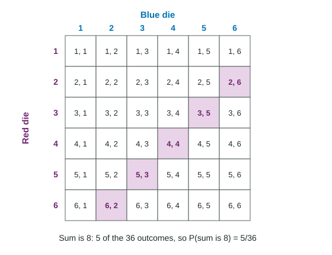

Introduction to Probability
List the sample space.
Part 1 · Hook
Why this matters
Part 2 · Before you start
What this builds on
Part 3 · Prerequisite check
Quick check before you start
1. "At least 3" heads in 5 flips means
- 3, 4 or 5 heads
- 0, 1, 2 or 3 heads
- exactly 3 heads
- 4 or 5 heads
Show the answer
At least 3 means 3 or more.
- Correct: 3, 4 or 5 heads:
- 0, 1, 2 or 3 heads:
- exactly 3 heads:
- 4 or 5 heads:
2. In 500 simulated trials, a result happened 85 times. What is the estimated probability?
- 0.17
- 0.85
- 85
- 0.085
Show the answer
: trials with the result over all trials.
- Correct: 0.17:
- 0.85:
- 85:
- 0.085:
Part 4 · See it
See it first

Part 5 · Step by step
How it works, step by step
- List every possible outcome of the chance processthe sample space (36 pairs for two dice)
- The outcomes are equally likelythe probability of an event is the number of its outcomes over the total:
- An event is easier to count from the outsideuse the complement rule:
- The outcomes are not equally likely (win, lose, tie)counting outcomes fails; use the long-run shares instead
Part 6 · Key ideas
Key ideas
- The sample space is the list of every possible outcome. An event is a set of outcomes, such as "sum is 8".
- When outcomes are equally likely,
. - Every probability is from 0 to 1, and the probabilities of all the outcomes add to 1.
- The complement is "A does not happen": . It is the quick route for "at least one".
Part 7 · Misconception
A common mistake
The wrong idea: A sum of 12 has probability , since there are 11 possible sums.
What actually happens: The sums are not equally likely. Count the 36 equally likely pairs: only (6, 6) gives 12, so the probability is .
Part 8 · Check yourself
Check yourself
Exam-style questions. Anything you miss goes into your review queue.
Diagram
Rolling a red die and a blue die
1. What is the probability that the sum of the two dice is 7?
Type a number. A table answer and a calculator answer are both accepted.
Show the answer
Six outcomes give a sum of 7: (1, 6), (2, 5), (3, 4), (4, 3), (5, 2), (6, 1). With 36 equally likely outcomes,
- Answer: 0.1667
2. What is the probability that the sum is at least 10?
Type a number. A table answer and a calculator answer are both accepted.
Show the answer
"At least 10" means 10, 11 or 12: (4, 6), (5, 5), (6, 4), (5, 6), (6, 5), (6, 6). That is 6 of 36: .
- Answer: 0.1667
3. What is the probability that at least one of the dice shows a 6?
Type a number. A table answer and a calculator answer are both accepted.
Show the answer
The complement is "neither die shows a 6": outcomes. So
- Answer: 0.3056
Table
A club's members by class
| Class | Freshman | Sophomore | Junior | Senior | Total |
|---|---|---|---|---|---|
| Members | 12 | 10 | 8 | 10 | 40 |
4. What is the probability that the winner is a junior?
Type a number. A table answer and a calculator answer are both accepted.
Show the answer
Each of the 40 members is equally likely to be chosen, and 8 are juniors: .
- Answer: 0.2
5. Which gives the sample space for the winner's class, with the correct probabilities?
- Freshman 0.25, sophomore 0.25, junior 0.25, senior 0.25
- Freshman 0.3, sophomore 0.25, junior 0.2, senior 0.25
- Freshman 12, sophomore 10, junior 8, senior 10
- Freshman 0.3, sophomore 0.25, junior 0.2, senior 0.2
Show the answer
The sample space lists every possible class. The probabilities come from the counts: , , , ; they add to 1.
- Freshman 0.25, sophomore 0.25, junior 0.25, senior 0.25: Four classes does not make them equally likely; the counts differ.
- Correct: Freshman 0.3, sophomore 0.25, junior 0.2, senior 0.25: Right: each class's count over 40.
- Freshman 12, sophomore 10, junior 8, senior 10: Those are counts. Probabilities are shares between 0 and 1.
- Freshman 0.3, sophomore 0.25, junior 0.2, senior 0.2: These add to 0.95, not 1. Seniors are 10 of 40, which is 0.25.
6. A fair coin is flipped 3 times. What is the probability of getting at least one head?
Type a number. A table answer and a calculator answer are both accepted.
Show the answer
The sample space has 8 equally likely outcomes (HHH, HHT, ..., TTT). Only TTT has no head, so
- Answer: 0.875
Part 9 · Summary
Summary
Part 10 · Up next
What comes next
Part 11 · Connections